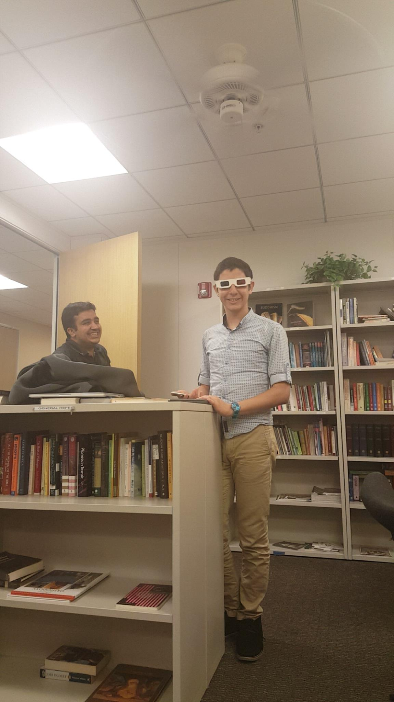

Inspect other disks
File type: .txt
During Winter Quarter, I remember staying in OU really late, and it was me and him only, and I was really tired, so he came all the way with me to FroSoCo.
File type: .txt
Fahim has stayed with me for 107 for many times to find a bug.
File type: .txt
After every bad exam I had Fahim would be totally successful in making me feel better.
File type: .txt
During Spring break, in the days he was here I would spend most of the day with him or go to his place and stay there. We also once went out for dinner. We were talking about our families, and it was really nice. He also came with me to the place I wanted to go to.
File type: .txt
I wasn't having the best week, and I guess it showed on my face. Fahim reached out to me and asked if I was doing alright. I'm glad he's there to listen.
File type: .txt
For 227b, we once stayed up until 3 am, and we were in the tech lounge in the 2nd floor of OU. He was working, and I was playing with the tables because they had up and down buttons. He was like "Abdallah, we need to focus for 10 minutes." I was so tired, and told him "I cannot do anything, I'm really sorry," so he decided that we should leave without finishing what we were doing because I was off.
Whenever it was the case whether working with him on the class, or doing other classes stuff, he would insist that I do the other class' work before working with him.
File type: .img
